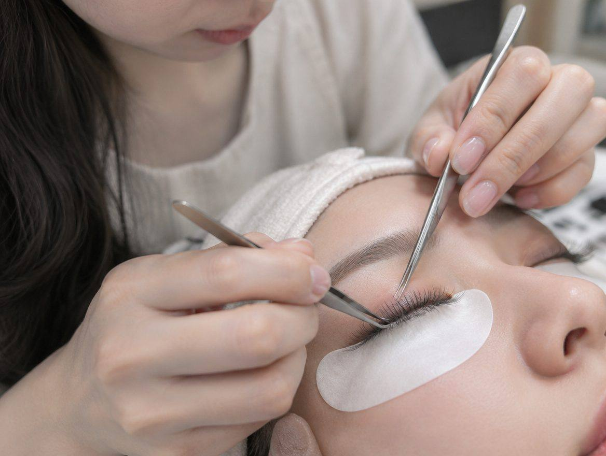
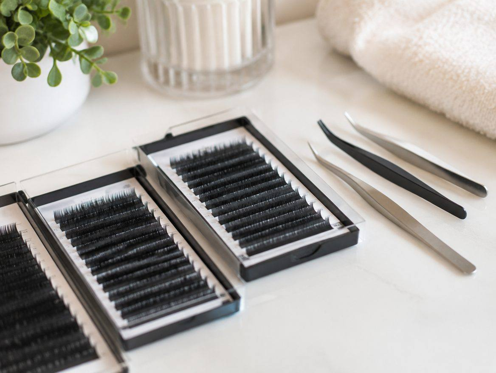
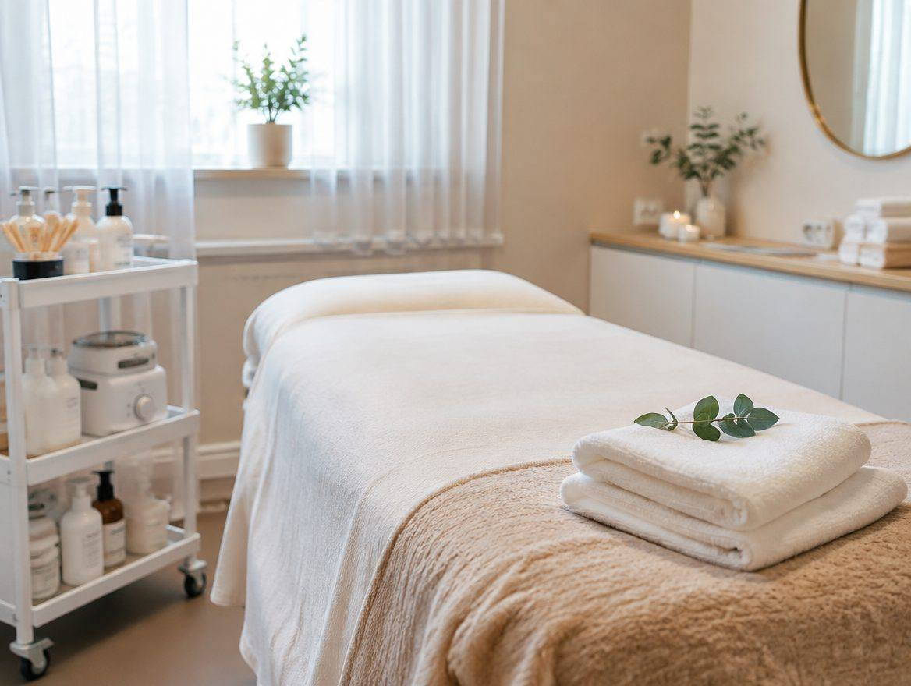

견본 속눈썹 A는 어떤 곳인가요?
견본 속눈썹 A는 고양시에서 속눈썹 · 왁싱 일을 하는 곳입니다. 일산 견본 속눈썹 A. 속눈썹 연장 · 펌 · 왁싱 예약 안내.
- 상호
- 견본 속눈썹 A
- 업종
- 속눈썹 · 왁싱
- 서비스 지역
- 일산 · 파주 · 김포
- 영업시간
- 평일 09:00 ~ 18:00
- 주소
- 고양시 00로 00
- 1인 1회 도구 사용
- 시술 전 알레르기 확인
- 예약제 운영
SERVICE
견본 속눈썹 A가 하는 일
일산 견본 속눈썹 A. 속눈썹 연장 · 펌 · 왁싱 예약 안내.
PROCESS
진행 순서
- 예약
- 디자인 상담
- 시술
- 유지 관리 안내
PHOTO
현장 · 매장 사진
예시 사진입니다. 실제 사이트에는 사장님 매장 · 현장 사진이 들어갑니다.



FAQ
자주 묻는 질문
디자인은 어떻게 고르나요?
인스타그램 디자인을 보여 주셔도 되고 상담 중 추천해 드립니다.
얼마나 유지되나요?
젤 네일은 3~4주 유지됩니다.
주차가 되나요?
건물 지하 주차 1시간 무료입니다.
전화 예약
견본 속눈썹 A · 010-0000-0000